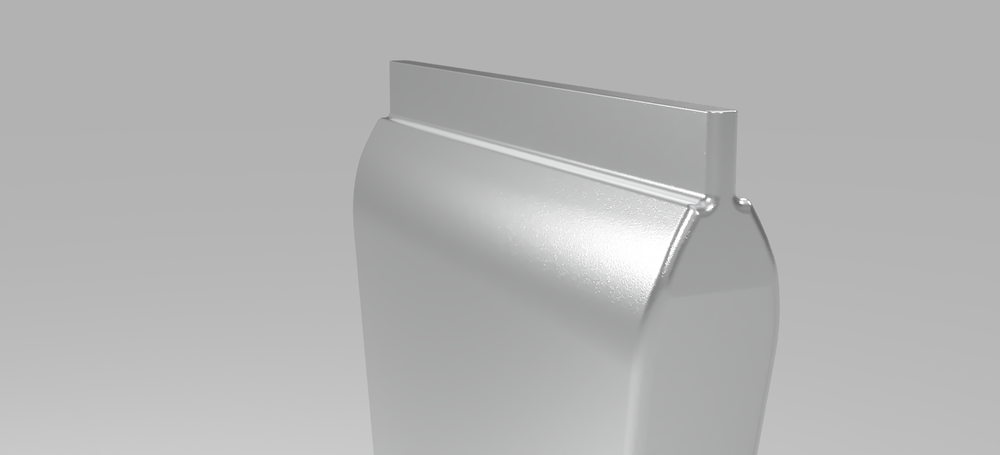

FALL 2021
2BE
practicing design thinking and research

WORK TYPE solo
CONTEXT engn32, brown university
TIME 4 weeks, ~8 hours/week
SKILLS design thinking, design research, cad
industries from food to beauty use various types of liquid tube packaging.
2be should reduce the packaging waste generated, while maximizing the output/input ratio of liquid.
2be should maintain the current low cost of production and capture the market with an innovative, efficient design with better user experience.
The product will first targeting core brands and usage areas to drive up customer preference. If the multi-use product is successful, a single-use version could be pursued.
insights were collected using a class survey
| questions | insights |
|---|---|
| before you throw away a tube, how much effort is put into maximizing the product extruded? | significant effort! |
| when you throw away a tube, how much product remains in the tube? | a little amount on average |
| when using a tube, what is most important to you (e.g. ease of use, speed of extrusion, volume extruded)? | ease of use is extremely important, followed by control over volume then speed of extrusion |
| does the material (e.g. thin plastic, hard plastic, thin foil, aluminum) of the tube affect your perception of the quality of the product? | thick plastic is cheaper, artificial, though maybe better than thin plastic. metal is fancier, higher quality, though one found it not visually pleasing |
| are there any physical components of tubes you find extremely important (e.g. a flat tube cap to place on the table)? | flat caps are important, followed by small physical footprint |
PERSONA MAP
| more effort | |||
|---|---|---|---|
| no preferences | product maximizer | detail-oriented user | particular |
| just need product | feature fanatic | ||
| less effort | |||
OUTDOORSMAN: JONAS
65 retired male who lives in Boulder, CO and enjoys backpacking frequently. an outdoorsman through and through, he prefers the basics and packs light. his favorite meal is rainbow trout grilled over a fire.
needs compact and high volume multi-use hygiene and food product. tubes should be the best way to carry large volume paste in a backpack.
used for food and hygiene products in the morning and night, all in the wilderness. for use, jonas simply takes out a tube and unscrews or uncaps it, extrudes the products, and replaces the top of the tube. sometimes in the dark, use comes from tactile feel. purchasing decisions mainly come from the product sold in the tube, compact design, and price.
gains: current tubes are excellent at carrying liquids and pastes to be used multiple times.
pains: sometimes tubes come in too large volume at once. tubes can be a lot of waste to pack back out because the design cannot be compacted.
65 retired male who lives in Boulder, CO and enjoys backpacking frequently. an outdoorsman through and through, he prefers the basics and packs light. his favorite meal is rainbow trout grilled over a fire.
needs compact and high volume multi-use hygiene and food product. tubes should be the best way to carry large volume paste in a backpack.
used for food and hygiene products in the morning and night, all in the wilderness. for use, jonas simply takes out a tube and unscrews or uncaps it, extrudes the products, and replaces the top of the tube. sometimes in the dark, use comes from tactile feel. purchasing decisions mainly come from the product sold in the tube, compact design, and price.
gains: current tubes are excellent at carrying liquids and pastes to be used multiple times.
pains: sometimes tubes come in too large volume at once. tubes can be a lot of waste to pack back out because the design cannot be compacted.
ARTIST: SAM
32 female software engineer who lives in Seattle, WA. she creates art in her free time and has a small studio corner in her apartment. sam’s favorite time of day is the late afternoon, when the light strikes a prism on her desk, flooding the room with a golden rainbow.
needs high volume and durable multi-use arts supplies storage, as well as normal hygiene use.
tubes are used primarily for art and are frequently opened and closed. art supplies are one of the longest-duration uses of a single tube. purchase decision is often made on the durability of tube and price.
gains: current metal tubes are great ways of carrying liquids like paint and the stiffer material makes control of the amount extruded easy. tactile caps help to open tubes when hands are dirty.
pains: aluminum tubes crinkle, leaving a lot of product left in the tube. poor sealing means often wasted product and dried, unusable product.
32 female software engineer who lives in Seattle, WA. she creates art in her free time and has a small studio corner in her apartment. sam’s favorite time of day is the late afternoon, when the light strikes a prism on her desk, flooding the room with a golden rainbow.
needs high volume and durable multi-use arts supplies storage, as well as normal hygiene use.
tubes are used primarily for art and are frequently opened and closed. art supplies are one of the longest-duration uses of a single tube. purchase decision is often made on the durability of tube and price.
gains: current metal tubes are great ways of carrying liquids like paint and the stiffer material makes control of the amount extruded easy. tactile caps help to open tubes when hands are dirty.
pains: aluminum tubes crinkle, leaving a lot of product left in the tube. poor sealing means often wasted product and dried, unusable product.
STUDENT: AZIM
21 male college student who lives in Baton Rouge, LA. he is extremely busy day to day and speeds through his morning and evening routines. his defining characteristic is not watching football (because he’s too busy, obviously).
needs a working tube with product. end of story. extrusion is fast and easy to control, taking the least amount of time for just the right amount of product. speed is important for a busy schedule.
used for hygiene products like toothpaste and the occasional lotion in his apartment early in the morning and late at night. the routines are instinctive and he can identify the tubes immediately by color. for azim, the first time nothing comes out of the tube, it goes in the trash.
gains: it can be easy to control and extrude a lot of product for flexible, larger tubes, saving azim time.
pains: when it comes to smaller tubes, especially ones made of harder plastic, azim doesn’t have the patience to force everything out.
21 male college student who lives in Baton Rouge, LA. he is extremely busy day to day and speeds through his morning and evening routines. his defining characteristic is not watching football (because he’s too busy, obviously).
needs a working tube with product. end of story. extrusion is fast and easy to control, taking the least amount of time for just the right amount of product. speed is important for a busy schedule.
used for hygiene products like toothpaste and the occasional lotion in his apartment early in the morning and late at night. the routines are instinctive and he can identify the tubes immediately by color. for azim, the first time nothing comes out of the tube, it goes in the trash.
gains: it can be easy to control and extrude a lot of product for flexible, larger tubes, saving azim time.
pains: when it comes to smaller tubes, especially ones made of harder plastic, azim doesn’t have the patience to force everything out.
SHOPPER: JODIE
38 female dentist’s secretary who lives in Burlington, VT. recently settled down, she loves to go shopping on the weekends. she is obsessed with dogs and owns two - bud, a golden retriever, and trish, a labradoodle.
needs control - a smooth extrusion for jodie, it’s all about the experience. any extra features that give the experience a bit more glamour or class are pluses.
used for makeup, hygiene, lotions. not only does she want them to work well, she wants them to look good. they’re part of the display. when she purchases a new product, she looks at the new features and the general aesthetics of the tube, then the product within and how well the tube works.
gains: some current tubes look great on her vanity as they look great and have fancy aesthetics. a lot of tubes are very elegant and great to use.
pains: a lot of tubes are inconsistent - some can stand on the cap, some can’t - and not all the tubes look good. sometimes hard tubes are difficult to get product out of, making the experience frustrating.
38 female dentist’s secretary who lives in Burlington, VT. recently settled down, she loves to go shopping on the weekends. she is obsessed with dogs and owns two - bud, a golden retriever, and trish, a labradoodle.
needs control - a smooth extrusion for jodie, it’s all about the experience. any extra features that give the experience a bit more glamour or class are pluses.
used for makeup, hygiene, lotions. not only does she want them to work well, she wants them to look good. they’re part of the display. when she purchases a new product, she looks at the new features and the general aesthetics of the tube, then the product within and how well the tube works.
gains: some current tubes look great on her vanity as they look great and have fancy aesthetics. a lot of tubes are very elegant and great to use.
pains: a lot of tubes are inconsistent - some can stand on the cap, some can’t - and not all the tubes look good. sometimes hard tubes are difficult to get product out of, making the experience frustrating.
IDEATION SESSIONS
three brainstorming sessions were conducted using the best fit, individual brainwriting, and worst idea methods. these were the main takeaways:
flexible
durable
light
cheap
easily sourced
simple shape
easy to manufacture
easy to extrude
easy to open
folding segments
clean, modern aesthetic
clear visual language
tactile markings
three brainstorming sessions were conducted using the best fit, individual brainwriting, and worst idea methods. these were the main takeaways:
flexible
durable
light
cheap
easily sourced
simple shape
easy to manufacture
easy to extrude
easy to open
folding segments
clean, modern aesthetic
clear visual language
tactile markings
FEELS-LIKE PROTOTYPE
this feels-prototype uses foam and artist's tape to simulate a compressible material.
this feels-prototype uses foam and artist's tape to simulate a compressible material.
FINAL CAD
the final version of 2be makes several optimizations compared to current tubes.
a “flattenable” model with straight edges
minimizes “neck” joint below the cap to reduce uneven crimping
smooth tapered body from flat crimp (for manufacturing sealing)
ridged cap for grip
the final version of 2be makes several optimizations compared to current tubes.
a “flattenable” model with straight edges
minimizes “neck” joint below the cap to reduce uneven crimping
smooth tapered body from flat crimp (for manufacturing sealing)
ridged cap for grip
